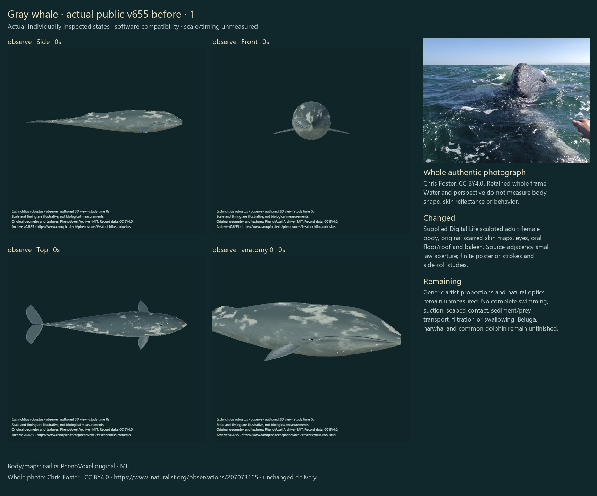
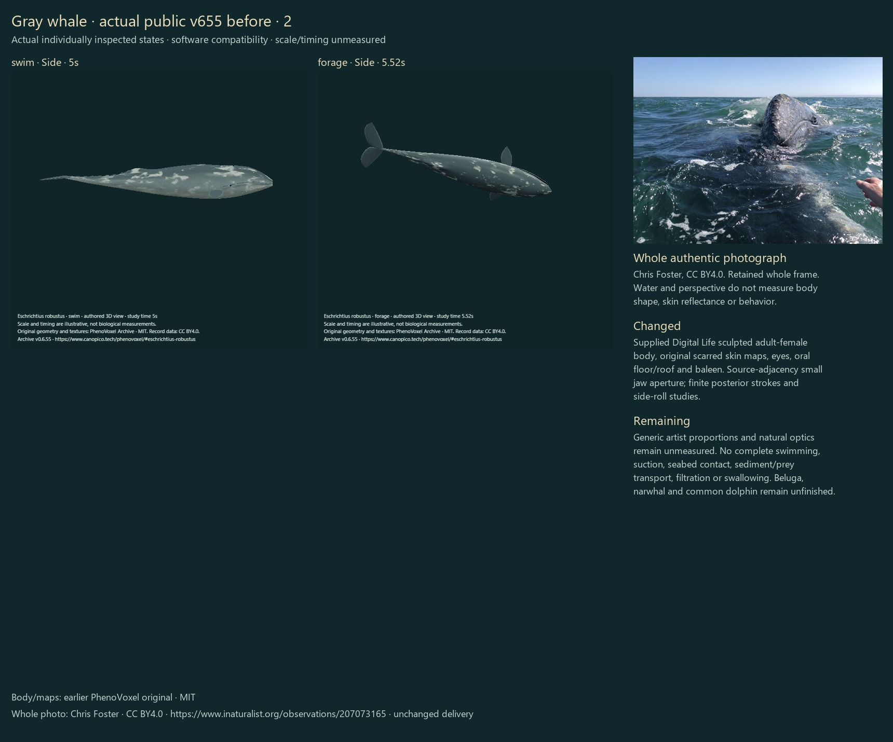
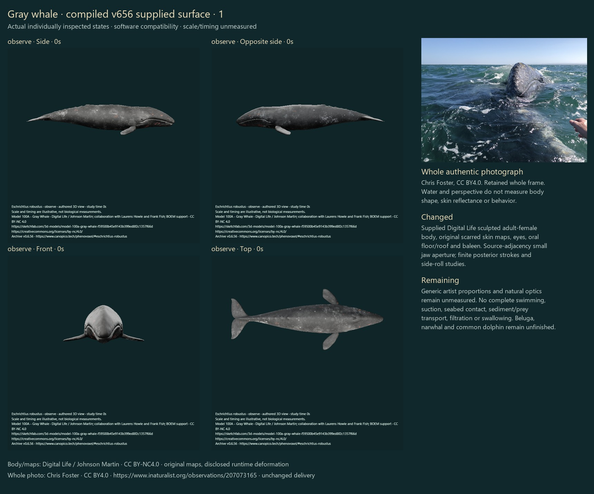
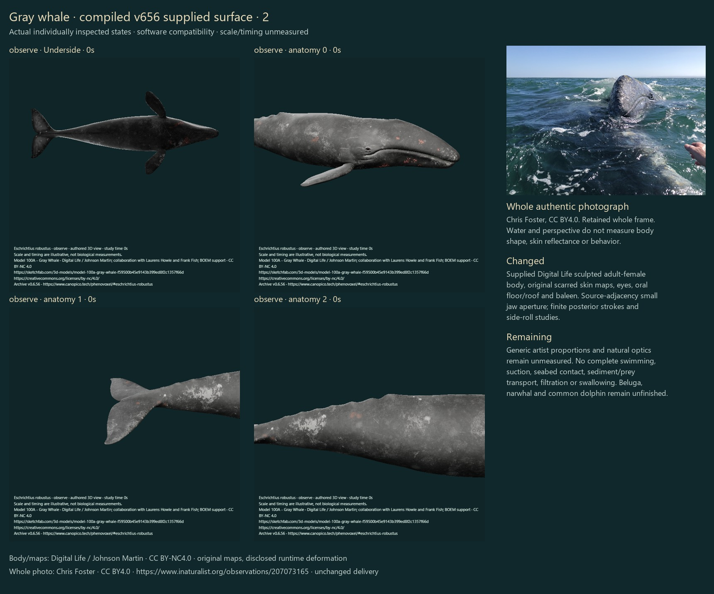
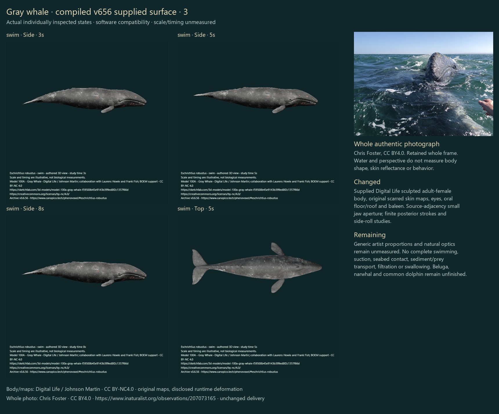
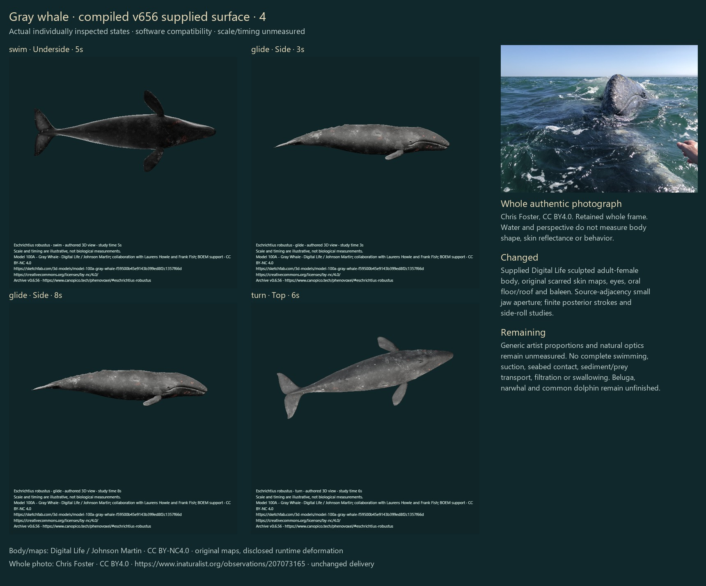
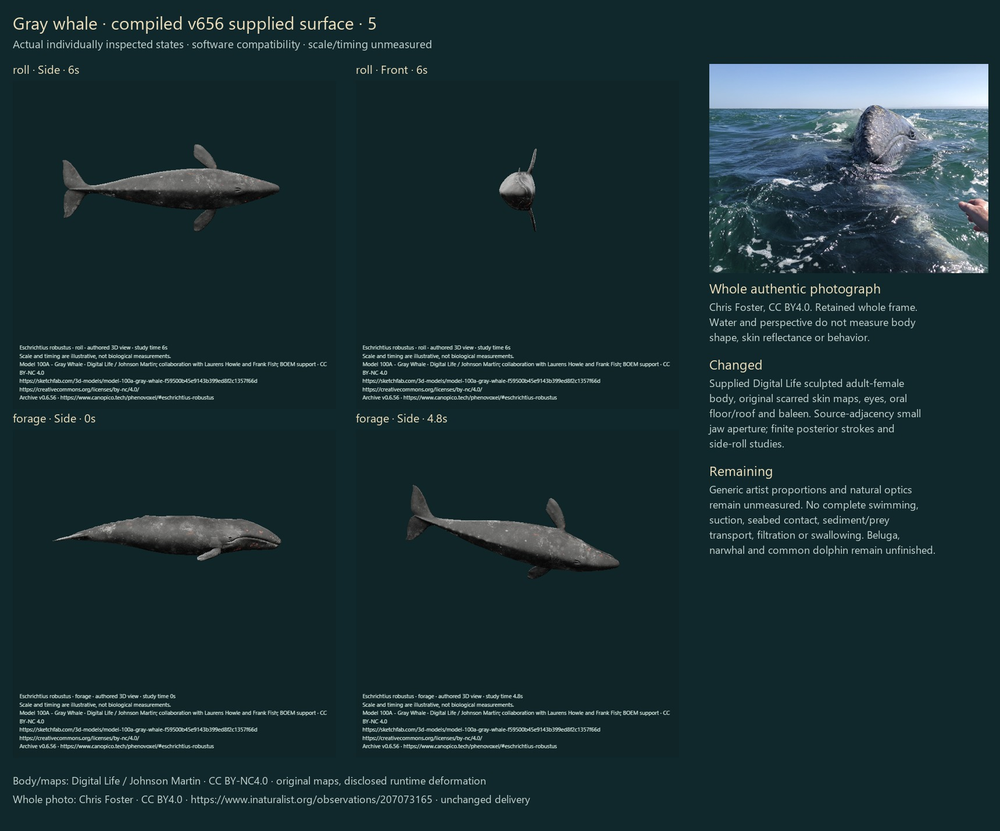
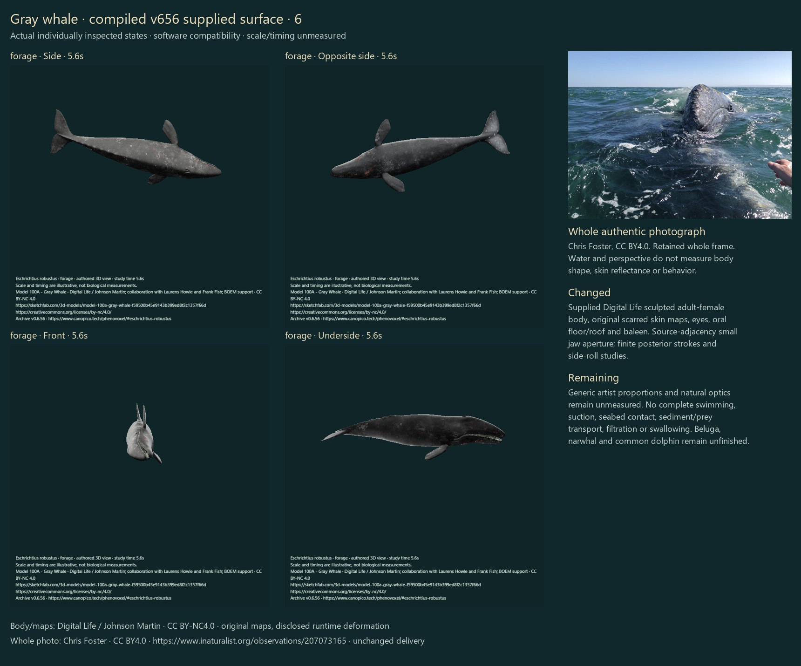
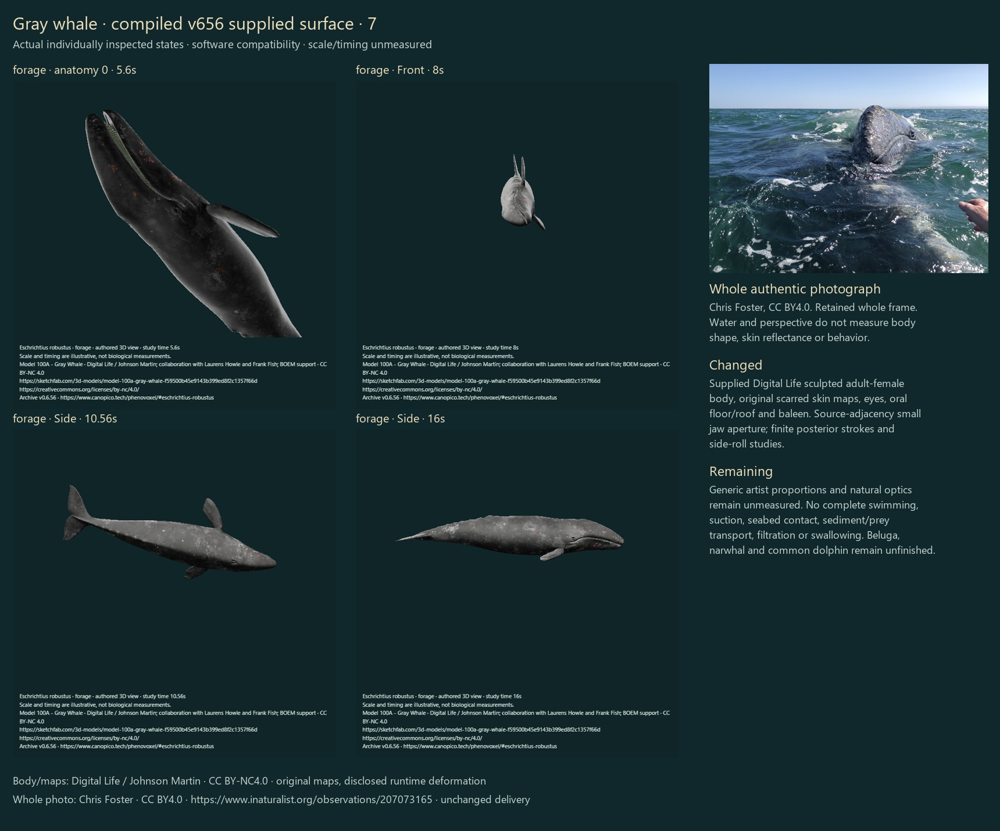
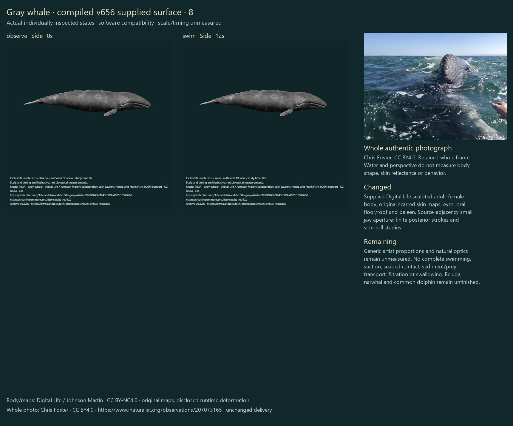

The earlier generated gray whale did not meet the requested realism. The supplied Digital Life Model100A replaces that active body with its sculpted adult-female exterior, arched jaw, small lateral eyes, low dorsal hump/knuckles, broad flippers, notched flukes and original irregular scarred skin. The same original surfaces and two artist maps remain throughout every study.
This is one existing gray-whale correction, with no added species. It is an artist reconstruction compared with photographs and primary science, not a living-body scan, measured named animal, photorealism certification or independent biological validation. Beluga, narwhal and common dolphin still require deeper rebuilding; the prior fin, blue whale and humpback surfaces are preserved.
CG artist Johnson Martin created the generic adult female for Digital Life in collaboration with Laurens Howle and Frank Fish, supported by BOEM. The creator describes using open-access images and video. The user supplied the actual GLB; its embedded source, title and grant agree with current public artist metadata. Its seven mesh primitives comprise four body chunks, one eyes chunk and two baleen chunks. These are storage partitions, not seven disconnected anatomical parts. The welded source body has one connected closed component and every edge has two incident triangles at the recorded welding tolerance.
Unchanged supplied GLB · Digital Life source · Creator grant, exact binary/image hashes and all derivatives. The entire 20,494,184-byte supplied GLB and both 1024×1024 embedded PNGs remain byte-exact. No protected online payload was extracted or online source archive downloaded. Runtime only normalizes display coordinates with one rigid orientation/uniform scale and authors local deformation. Original proportions, image pixels, UVs, source indices, oral floor/roof, eyes and baleen are retained. Source skin factors and approximate display highlights are uncalibrated.
The source already has a lower oral floor and upper roof, so a new generic mouth cut would discard useful anatomy. Real source triangle adjacency identifies two separate anterior components; only the lower component receives a tapered selected jaw rotation. No extra elliptical lips or replacement baleen are added. The finite 16-second benthic study uses a small selected 3.7-degree maximum aperture and minor anterior gular-floor change, then closes, holds the benthic posture and returns level. It does not inflate a rorqual-style pouch.
The finite 12-second stroke study integrates fixed-length posterior centreline stations while anterior stations stay still, with selected distal fluke pitch and small pectoral stabilization on the same connected exterior. A stroke–glide sequence stops strokes by six illustrative seconds. Turn and ninety-degree right-side actions change body-centred orientation and return to neutral. Source maps and every source surface persist across actions. Selected 0.225Hz display frequency, amplitude, phase, duration and stationary presentation are authored, not measured gray-whale swimming.
NOAA’s gray-whale account supports the finless low hump/knuckles, gray/white scar and epibiont variation, short baleen and benthic feeding context. It does not validate individual artist proportions, skin pixels or optical properties. The preserved source atlas represents one generic choice, not a universal scar, barnacle or cyamid distribution.
Torres et al.2018 provides retained Oregon aerial posture/behavior context: 53 sightings, with 17 side-swimming events in six sightings; the preceding actual Table 1 and complete Figure 4 inspection scope is retained. No universal side preference, new source-video inspection or fitted trajectory is inferred.
Clayton et al.2026 studied northern Puget Sound ghost-shrimp foraging: 39 tag deployments on 16 whales, with 25 deployments recording foraging. The reported mean 107.5-degree right roll and −14-degree pitch provide study-specific orientation context here. The paper discusses limited relative gape and empirical near-closed benthic feeding, and used a closed-mouth skull simulation for contact estimates. Its data do not determine our selected jaw aperture, skin deformation or 16-second playback. The current primary full-text discussion was re-read; earlier actual Figures 1,3,5 inspection is retained, not claimed as a new video review.
Full swimming trajectories, speed, thrust, pressure/flow, seabed contact, sediment/prey transport, tongue/hyoid mechanics, baleen filtration, swallowing and physiology remain unfinished. The photographed wide mouth is useful oral-anatomy context, not a measured normal benthic sequence. No water or prey transport is claimed from an exterior jaw gesture.
Five supplied references were compared privately: three live photographs and two illustrations, distinguished in the inspection notes. They are not redistributed or projected as texture pixels. The retained whole Chris Foster profile photograph below remains unchanged with its precise existing CC BY4.0 grant and original download/delivery hashes. No new original-resolution photograph retrieval or independent individual determination is claimed.
6 actual v655 public baseline states and 30 compiled candidate states. All accepted states were individually inspected. Software compatibility only; no final WebGL optics.










| Actual state | Observed result and residual |
|---|---|
| observe / Side / 0s | Side: source arched jaw, small lateral eye, deeper continuous body and low knuckles are visible; original scarred gray atlas replaces the old coarse generated flecks. Artist proportions remain unmeasured. |
| observe / Opposite side / 0s | Opposite side: distinct original skin marks and jaw contour remain attached; no dorsal fin or generic lip overlay added. Individual pigmentation/epibiont identification remains unresolved. |
| observe / Front / 0s | Front: broad arched head and source lower jaw remain visible with paired spread flippers. Cross-section and optics are source selections, not fitted measurements. |
| observe / Top / 0s | Top: tapered body, broad notched flukes, pectoral planforms and head outline are readable. Small dorsal head details are limited at this full-body resolution. |
| observe / Underside / 0s | Underside: original ventral surface and swept flukes remain nonblank and joined; darker source underside limits fine contrast. No rorqual-style longitudinal pouch array added. |
| observe / Side / 0s / focus 0 | Head focus: retained small eye, arched commissure, source scarring and pectoral root are clear. Fine eye/soft-tissue proportions and colored marks remain unmeasured artist choices. |
| observe / Side / 0s / focus 1 | Fluke focus: broad source foil, central notch and textured peduncle are clear without the old leaf-like generated planform. Tissue limits and hydrodynamic profile remain unvalidated. |
| observe / Side / 0s / focus 2 | Dorsal focus: low source hump/knuckles and original gray/white marks are visible. No tall fin; actual knuckle/scar dimensions or epibiont identities are not determined. |
| swim / Side / 3s | Swim3 side: modest posterior curve and distal foil orientation change while the head stays steady; source skin/roots remain joined. No thrust or speed estimate. |
| swim / Side / 5s | Swim5 side: different posterior/fluke phase is visible on the same source; front body/eye/jaw remain steady. Selected frequency and phase are unfitted. |
| swim / Side / 8s | Swim8 side: posterior curvature differs from the earlier frames; same original surfaces/skin remain without visible chunk seams. No measured muscle or force controller. |
| swim / Top / 5s | Swim5 top: source flippers/flukes retain their planforms and roots; dorsoventral articulation is less apparent from above. No trajectory or body-fluid coupling claimed. |
| swim / Underside / 5s | Swim5 underside: dark original ventrum and appendage unions remain continuous; surface detail is limited by compatibility lighting. No final WebGL optics. |
| glide / Side / 3s | Glide3: source posterior stroke remains present during the finite stroke segment; head/source map unchanged. Timing is illustrative. |
| glide / Side / 8s | Glide8: source has settled to the quiet neutral exterior after the selected six-second stop. No buoyancy, rest physiology or solved gliding trajectory. |
| turn / Top / 6s | Turn6 top: same body and original marks are yawed about the body centre; no replacement mesh. Orientation illustration, not a complete maneuver. |
| roll / Side / 6s | Roll6 side: selected right-side posture retains closed source mouth and original surface. No feeding pressure or universal side preference inferred. |
| roll / Front / 6s | Roll6 front: lateral rotation of the head and paired appendages is readable; body remains centred. This action keeps the jaw closed. |
| forage / Side / 0s | Forage0: neutral source posture at the feeding study start. Different framing reserves the posture envelope; no aperture or trunk inflation. |
| forage / Side / 4.8s | Forage4.8 side: right-rolled, slightly head-down posture and a small source-jaw aperture; same skin and trunk dimensions. No exaggerated rorqual pouch. |
| forage / Side / 5.6s | Forage5.6 side: benthic posture holds with subtle anterior mouth separation; posterior body/skin remain unchanged. This exterior does not demonstrate suction. |
| forage / Opposite side / 5.6s | Forage5.6 opposite: the other side retains original scars and jaw contour through the same small aperture. No duplicated generic oral overlay. |
| forage / Front / 5.6s | Forage5.6 front: rolled head and small oral gap/baleen are visible at full-body scale. Short-plate fine structure cannot be established from this view alone. |
| forage / Underside / 5.6s | Forage5.6 underside: original lower shell, source oral opening and pale rack edge remain attached; no middle-trunk enlargement. Suction/flow is not computed. |
| forage / Side / 5.6s / focus 0 | Forage5.6 head focus: existing source lower jaw, roof and short baleen rack are exposed by the small selected aperture. Commissure and gular blend are retained; tongue/hyoid mechanics and tissue limits remain unfinished. |
| forage / Front / 8s | Forage8 front: aperture is closing while the side posture holds. The stage is an authored exterior transition, not evidence of prey capture, filtration or swallowing. |
| forage / Side / 10.56s | Forage10.56 side: mouth has closed and benthic posture is held; same source skin and unchanged trunk remain. No sediment or feeding-force inference. |
| forage / Side / 16s | Forage16 side: level source posture and closed mouth recover at the finite endpoint; no perpetual loop or residual inflated throat. |
| observe / Side / 0s | Observe after actions: full original closed-mouth source exterior is restored with the same scars, flippers and knuckles. No shape/texture swap. |
| swim / Side / 12s | Swim12 side: exact finite neutral endpoint visually restores the original body/fluke posture; software checks separately compare every vertex and normal. |
The first five new source/movement checks passed. The initial affected regression passed 77/80 and exposed three integration issues: the old asset registry counted 35 models and treated the new NC gray whale as one of 28 legacy CC BY sources, and the new feeding timescale lacked the explicit uncalibrated word required by the existing schema. The registry now keeps all original 28 checks and separately includes the new exact-source tests; the timescale wording was repaired. The new preservation check also initially compared Python numeric JSON serialization against JavaScript serialization; comparing both against the actual prior commit using JavaScript repaired that new fixture. All 336 other parsed record objects were unchanged. No original historical hashes were dropped or regenerated: a strict reversible gray ledger restores exact prior fields before the retained contracts run.
Final full local software checks: 391/391 passed. This verifies software/source properties, not biological accuracy.
337 actual species; zero additions. The other 336 record objects, all identity/taxonomy/photo/occurrence fields, original dirty 300-record source and prior artist assets are preserved. Schedules remain off. No automatic next species.
Actual final PNGs and inspection ledger. Source derivatives retain CC BY-NC4.0; photograph rights remain separately CC BY4.0.